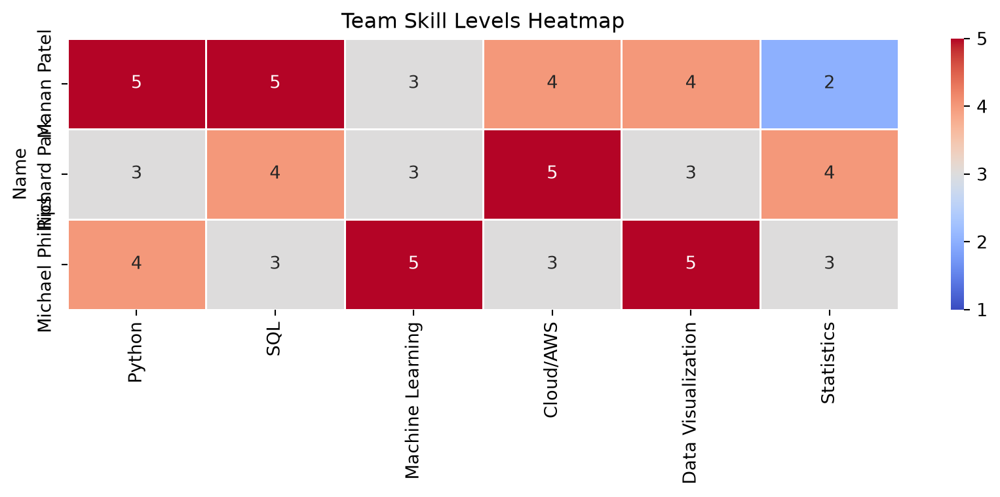

This page compares our team’s current skill levels against how often each skill appears in real Data Analyst job postings inside NAICS 5182, then proposes an improvement plan and a draft set of recommendations for job seekers.
Team Skill Levels
Each team member self-rated their current proficiency on a 1-5 scale:
import seaborn as snsimport matplotlib.pyplot as pltplt.figure(figsize=(9, 4))sns.heatmap(df_skills, annot=True, cmap="coolwarm", linewidths=0.5, vmin=1, vmax=5)plt.title("Team Skill Levels Heatmap")plt.tight_layout()plt.show()

Reading the heatmap: no single team member is strongest across every skill – Manan leads in Python/SQL, Michael leads in Machine Learning/Data Visualization, and Richard leads in Cloud/AWS. Statistics has the lowest team average (3.0), with ratings ranging from 2 to 4. Richard meets the Advanced level; Manan and Michael fall below it.
What the Market Asks For
To ground the comparison in real postings, we used our second dataset, the 2024 Lightcast export (209 postings, filtered with the same industry, location, and career-pathway rules; see Data Preparation). Unlike the MET API extract, whose skills field is truncated to the first few skills alphabetically for each posting (every one of its top 20 most-frequent values started with “A” or “B”, so we did not use it), the Lightcast skills field is complete: each posting lists its full set of skills, about 24 on average.
We classified each posting into a role family from its title, then counted how many postings in each role list each of our six skill areas. A skill area counts as listed when any of a posting’s skills matches the area’s name patterns (for example, Python (Programming Language) counts for Python, and Tableau or Power BI count for Data Visualization). The patterns are in the code below.
What this dataset can and cannot tell us: the Lightcast sample is almost entirely Data Analyst postings, with a small group of Data / Analytics Engineer postings and no Data Scientist or ML Engineer postings. The market demand below therefore describes the Data Analyst role. It cannot yet show what separates Data Analyst roles from Data Scientist roles, and the Data / Analytics Engineer figures rest on very few postings, so treat them as directional only.
Comparing Team Skills to Market Demand
The scorecard lists the six skills from most to least often listed in Data Analyst postings. We group demand into tiers (High is 50% or more of postings, Moderate is 25-49%, Low is under 25%) and use Advanced (4) as the level a team member should reach in a high-demand skill. The tiers and the target level are team-chosen reading aids; the demand percentages come from the postings.
analyst = lc[lc["role"] =="Data Analyst"]analyst_demand = pd.Series({skill: share_with_skill(analyst, pat) for skill, pat in skill_patterns.items()})def demand_tier(share):if share >=0.5:return"High (50%+)"if share >=0.25:return"Moderate (25-49%)"return"Low (under 25%)"skills_in_order = analyst_demand.sort_values(ascending=False).index.tolist()scorecard = pd.DataFrame({"Share of Data Analyst postings": [f"{analyst_demand[s]:.0%}"for s in skills_in_order],"Demand tier": [demand_tier(analyst_demand[s]) for s in skills_in_order],"Team Average": [round(df_skills[s].mean(), 2) for s in skills_in_order],"Team Minimum": [int(df_skills[s].min()) for s in skills_in_order],"Members below Advanced (4)": [", ".join(df_skills.index[df_skills[s] <4]) or"none"for s in skills_in_order],}, index=pd.Index(skills_in_order, name="Skill"))scorecard
Share of Data Analyst postings
Demand tier
Team Average
Team Minimum
Members below Advanced (4)
Skill
Data Visualization
69%
High (50%+)
4.00
3
Richard Park
SQL
57%
High (50%+)
4.00
3
Michael Phillips
Python
46%
Moderate (25-49%)
4.00
3
Richard Park
Statistics
32%
Moderate (25-49%)
3.00
2
Manan Patel, Michael Phillips
Machine Learning
17%
Low (under 25%)
3.67
3
Manan Patel, Richard Park
Cloud/AWS
10%
Low (under 25%)
4.00
3
Michael Phillips
Interpretation: Data Visualization (69% of Data Analyst postings) and SQL (57%) are the two most frequently listed skills, and both are in the high-demand tier. The team averages 4.0 in each, but Richard rates Data Visualization at 3 and Michael rates SQL at 3, so each high-demand skill still has one member below Advanced. Python (46%) sits just under the high-demand line; the team averages 4.0, with Richard at 3. Statistics (32%) is in the moderate tier and is the team’s weakest area (average 3.0, with Manan at 2 and Michael at 3). Machine Learning (17%) and Cloud/AWS (10%) appear in few Data Analyst postings, so they matter less at the analyst entry point. Cloud/AWS is still relevant to our industry context (NAICS 5182 is cloud computing and hosting), and it is a skill where Michael rates 3.
The small Data / Analytics Engineer group (see the first table) leans much more on SQL and Python than on visualization, which suggests that a move toward engineering roles raises the importance of those two skills. With only 14 postings, this is directional only.
Improvement Plan
These proposed milestones should be confirmed by the team, and each suggested resource should be checked for current availability. Timeframes begin when the plan is adopted; they describe future work, not completed contributions.
Member
Priority (self-rating; share of Data Analyst postings)
Proposed action
Suggested resource
Timeframe and evidence
Manan Patel
Statistics (2; 32%)
Practice hypothesis testing and regression with Richard’s review.
Khan Academy, “Statistics and Probability” (free)
Within two weeks: one reproducible notebook explaining assumptions, results, and limitations.
Richard Park
Data Visualization (3; 69%), then Python (3; 46%)
Pair with Michael on visualization and with Manan on Python.
Tableau Public free training videos; “Python for Everybody” (Coursera, University of Michigan)
Within two weeks: one Python analysis with two labeled charts and written interpretations.
Michael Phillips
SQL (3; 57%), then Statistics (3; 32%) and Cloud/AWS (3; 10%)
Start with SQL aggregation practice, then statistical interpretation; follow with a small AWS analysis because of the industry scope.
Within two weeks: SQL aggregation queries with written results; within four weeks: a small analysis run on AWS, documenting setup, outputs, and resource cleanup.
Shared priority: the two highest-demand skills are Data Visualization and SQL. Richard and Michael can each teach the other’s weaker skill (Richard rates SQL at 4 and Michael rates Data Visualization at 5), so they should pair on those first. Statistics remains the team’s lowest average, so within two weeks the team should also complete one worked statistical example and peer-review its interpretation.
Draft Recommendations
These draft recommendations for job seekers come from the Exploratory Analysis page and the scorecard above. They describe the Data Analyst pathway in NAICS 5182 and should be revisited with the final analytics in Module 5.
Lead with SQL and data visualization. They are the two most frequently listed skills, in 57% and 69% of Data Analyst postings. Build portfolio dashboards in Tableau or Power BI backed by SQL queries.
Add Python and statistics next. Python appears in 46% of Data Analyst postings and statistics in 32%. Statistics is also the team’s lowest-rated skill.
Expect a mid-level market and build experience early. Where experience is stated, requirements mostly fall in the 3-8 year range, so projects, internships, and certifications can help offset limited work history.
Look at California and New York for volume, and Texas for pay. California and New York have the most postings in both datasets, and Texas leads on average disclosed pay in the 2026 data.
Ask about the work arrangement. Most postings do not state a remote or onsite policy, and hybrid is the most common stated arrangement.
Plan the move toward Data Scientist / ML roles if pay growth is the goal. The average disclosed pay for ML Engineer and Data Scientist postings is about 2.3 times that of Data Analyst postings. The skills that separate those roles still need to be validated in Module 5.
Limitations and Next Steps
The Lightcast sample is a 2024 snapshot of 209 postings, almost all Data Analyst roles. Market demand here applies to the Data Analyst role only; there are no Data Scientist or ML Engineer postings in it.
The MET API skills field is truncated, so it cannot be used to rank skills. Skill requirements for Data Scientist, ML Engineer, and Analytics Engineer roles still need posting-level data or cited occupational sources, and answering how those roles differ from Data Analyst roles is planned for Module 5.
Skills are matched by name patterns (listed in the code above), so postings that name a skill in another way would be missed.
Self-ratings are subjective. Each member should confirm their ratings, particularly any 5 (Expert), with a project or work example.
Review the proposed milestones together and reassess individual gaps after the deliverables are completed.